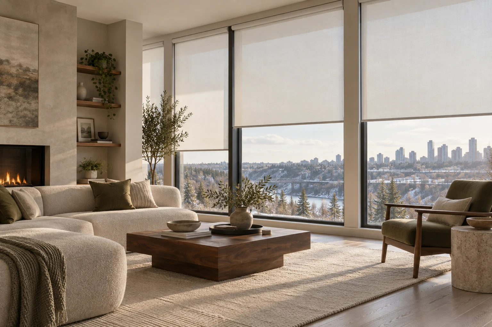
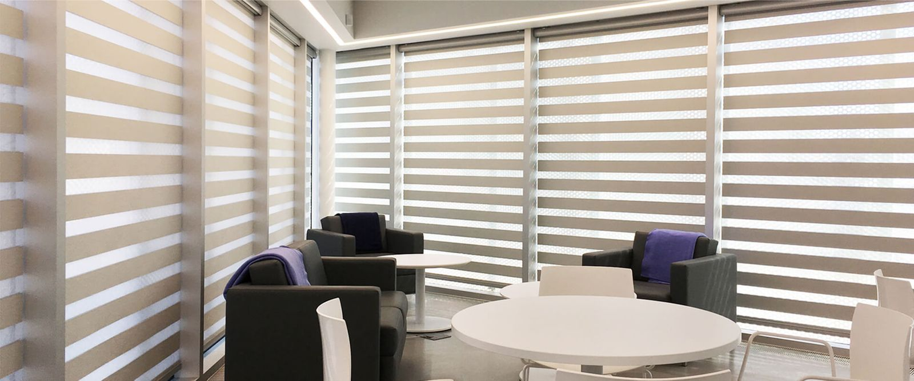
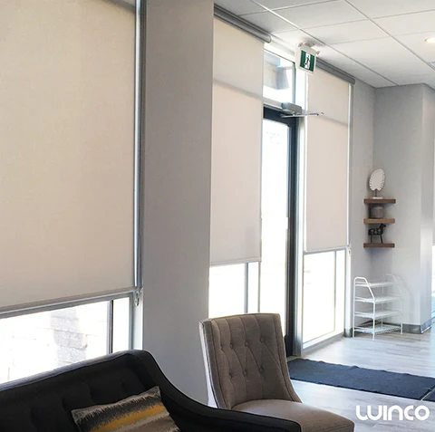
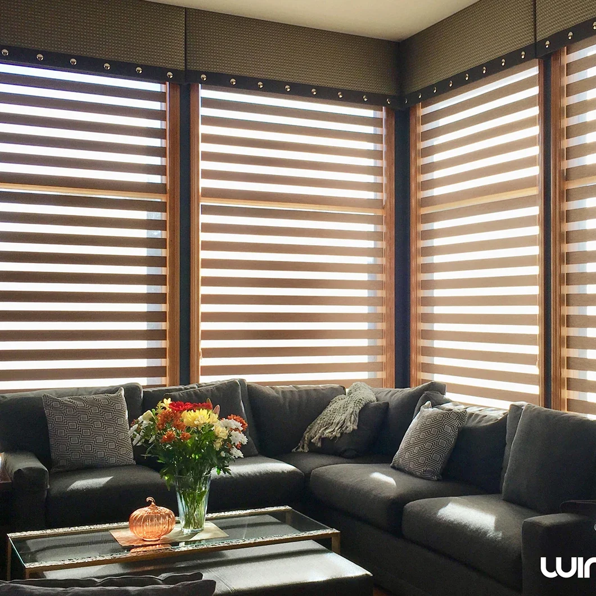

Meet & measure.
Book a free on-site measurement and estimate. We’ll talk through your windows, your routines and the light you want.
MADE FOR YOUR WINDOWS. MADE FOR YOU.
Beautiful custom blinds, thoughtfully chosen.
Find the balance of light, privacy and style
that feels just right for your space.

THE COLLECTIONS
Three ways to shape the light. One simple place to start.

01A little light. A little privacy. Find your balance with alternating sheer and solid fabric.

02One clean silhouette, with fabrics that soften daylight or help darken your room.

03Explore motor options for effortless everyday control, even in hard-to-reach places.
Shade style shown; motor options vary.A LOCAL TOUCH
Choosing blinds should feel as comfortable as coming home. At our Edmonton showroom, you can take your time, compare materials and talk through what your rooms really need.
We manufacture and assemble custom shades in Edmonton, bringing fabric selection, fitting and local service together.
Get to know WincoFROM IDEA TO EVERYDAY
You don’t need to have it all figured out. That’s what we’re here for.
Book a free on-site measurement and estimate. We’ll talk through your windows, your routines and the light you want.
Compare real samples and confirm your quote. Your shades are made to measure by our Edmonton team.
Your shades are installed within 7 business days of placing your order. We’ll walk you through their operation and help with aftercare.
A BETTER VIEW STARTS HERE
Bring your ideas. We’ll bring the samples
and help you make them your own.